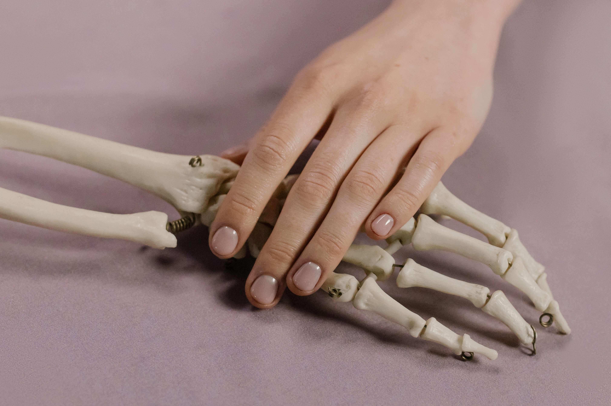

InflammatoryRheumatoid Arthritis (RA)
Chronic Symmetrical Joint InflammationAn autoimmune disorder where the immune system mistakenly attacks the synovium lining joints, leading to painful swelling, bone erosion, and potential deformity if left untreated without early intervention.
Common Indicators
- Morning stiffness lasting > 30–60 minutes
- Symmetrical swelling in knuckles, wrists, and feet
- Persistent low-grade fatigue and joint warmth
Anti-CCP & RF Testing
POCUS Ultrasound
Targeted Biologics

Dr. Priya Nair
Lead Specialist